¶ Задание
2. Выполните настройку центра сертификации на базе HQ-SRV:
- Необходимо использовать отечественные алгоритмы шифрования
- Сертификаты выдаются на 30дней
- Обеспечьте доверие сертификату для HQ-CLI
- Выдайте сертификаты веб серверам
- Перенастройте ранее настроенный реверсивный прокси nginx на протокол https
- При обращении к веб серверам https://web.au-team.irpo и https://docker.au-team.irpo у браузера клиента не должно возникать предупреждений.
¶ Реализация
¶ Первоначальная настройка
GOST Engine— модуль для OpenSSL, реализующий поддержку российских криптографических алгоритмов в соответствии с ГОСТ Р 34.10-2012, ГОСТ Р 34.11-2012 и другими стандартами.Пакет
openssl-gost-engine, по умолчанию предустановлен в РЕД ОС.
Виртуальная машина HQ-SRV
Устанавливаем необходимые пакеты если они не установлены.
Включаем поддержку алгоритмов шифрования ГОСТ:
Проверяем используемую в системе политику шифрования:
Применяем модуль политики, определяющий используемые методы шифрования ГОСТ:
Проверяем, видит ли OpenSSL алгоритмы ГОСТ:
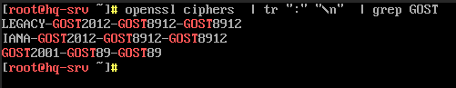
¶ Создание корневого УЦ (Удостоверяющий Центр)
Создаем директорию са в домашнем каталоге пользователя sshuser
Создаём закрытый ключ ca.key с алгоритмом ГОСТ-2012:
Создаём сертификат ca.crt на 30 дней:
В результате сформируются закрытый ключ са.key и сам сертификат са.crt
Проверяем
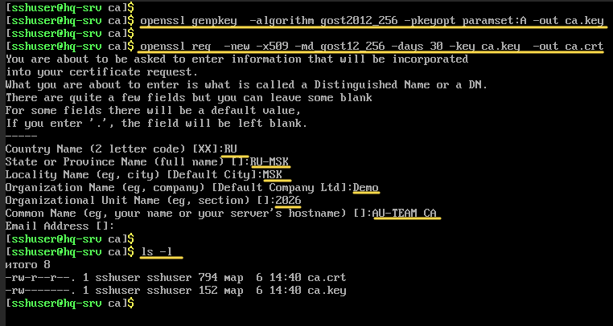
Проверка сертификата ca.crt
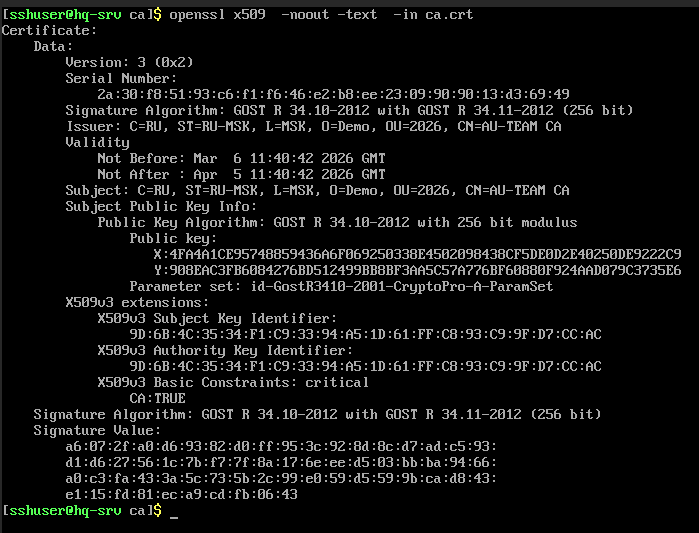
¶ Создание ключей для web.au-team.irpo и docker.au-team.irpo
web.au-team.irpo
Создание закрытого ключа для ```web.au-team.irpo``
Создаём запросc на подпись УЦ
Подписываем запрос в УЦ
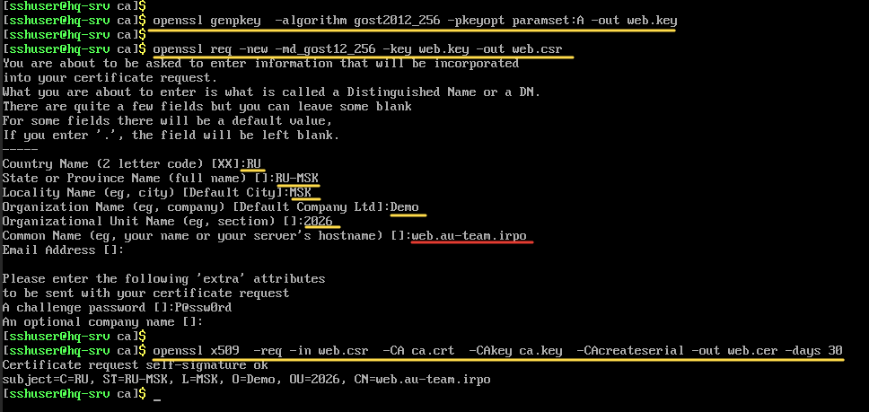
docker.au-team.irpo
Создание закрытого ключа для docker.au-team.irpo
Создаём запросc на подпись УЦ
Подписываем запрос в УЦ
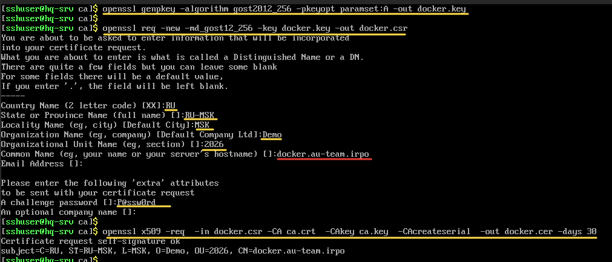
Получаем
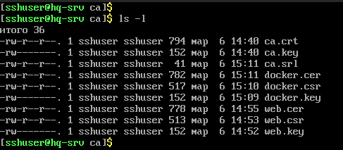
Передаем web.cer web.key docker.cer docker.key на ISP
Виртуальная машина ISP
Устанавливаем необходимые пакеты если они не установлены
Включаем поддержку алгоритмов шифрования ГОСТ:
Проверяем используемую в системе политику шифрования:
Применяем модуль политики, определяющий используемые методы шифрования ГОСТ:
Проверяем, видит ли OpenSSL алгоритмы ГОСТ:
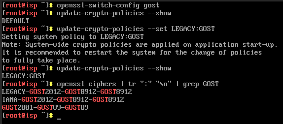
Создаём каталог /etc/nginx/ssl и копируем туда файлы web.cer web.key docker.cer docker.key:
Устанавливаем права на web.key docker.key
Правим файл конфигурации /etc/nginx/nginx.conf
Добавляем строки
Проверяем наличие ошибок:
Перезапускаем службу nginx:
Виртуальная машина HQ-SRV
Передаём на HQ-CLI корневой сертификат ca.crt УЦ:
Виртуальная машина HQ-CLI
Устанавливаем необходимые пакеты если они не установлены
Включаем поддержку алгоритмов шифрования ГОСТ:
Проверяем используемую в системе политику шифрования:
Применяем модуль политики, определяющий используемые методы шифрования ГОСТ:
Проверяем, видит ли OpenSSL алгоритмы ГОСТ:
Копируем корневой сертификат в /etc/pki/ca-trust/source/anchors/
Обновляем общесистемный список доверенных CA
Выводим список доверенных сертификатов
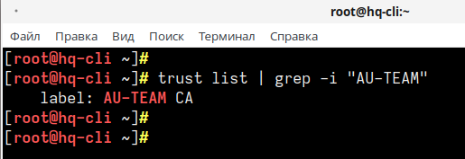
¶ Установка КриптоПро CSP
Виртуальная машина HQ-CLI
На HQ-CLI переходим на сайт https://cryptopro.ru/products/csp
Регистрируемся и скачиваем КриптоПро CSP с 90-дневной лицензией
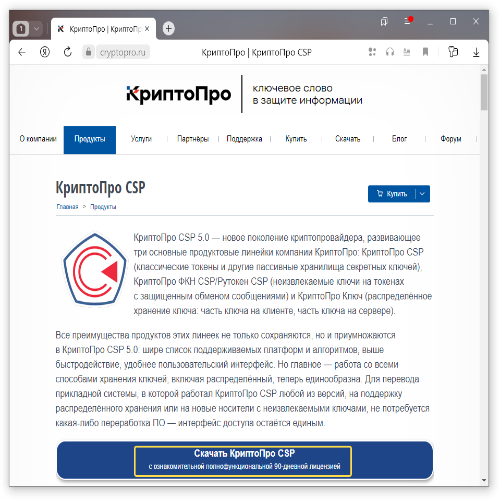
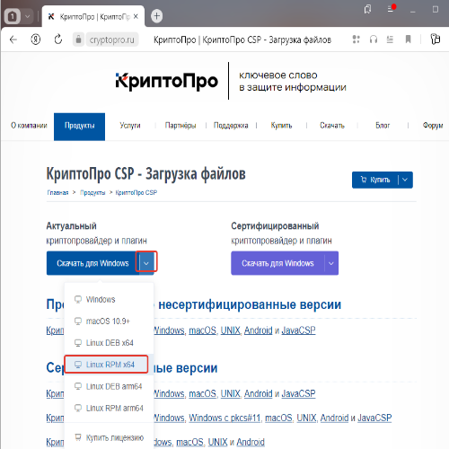
Переходим в директорию Загрузки:
Распаковываем архив:
Переходим в директорию с распакованным архивом:
Запускаем скрипт установки:
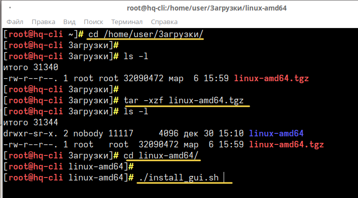
Жмем Далее
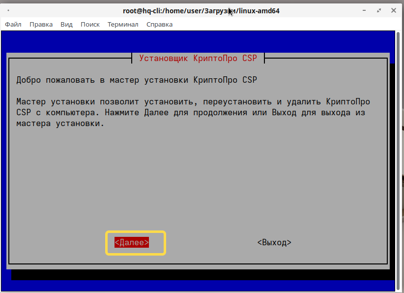
Выбираем необходимые пакеты для установки:
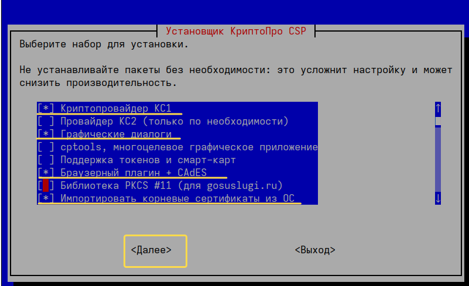
Жмем Установить
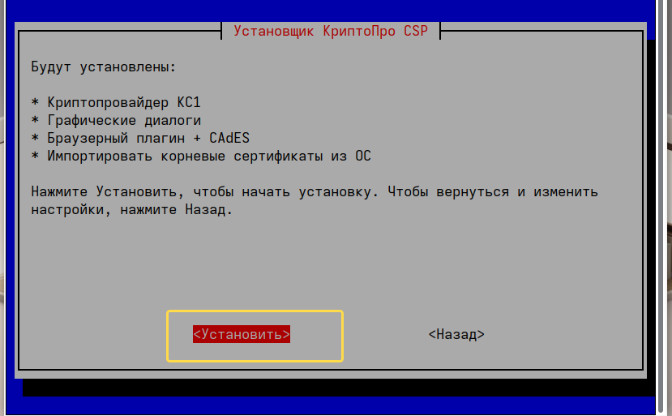
Жмем ОК
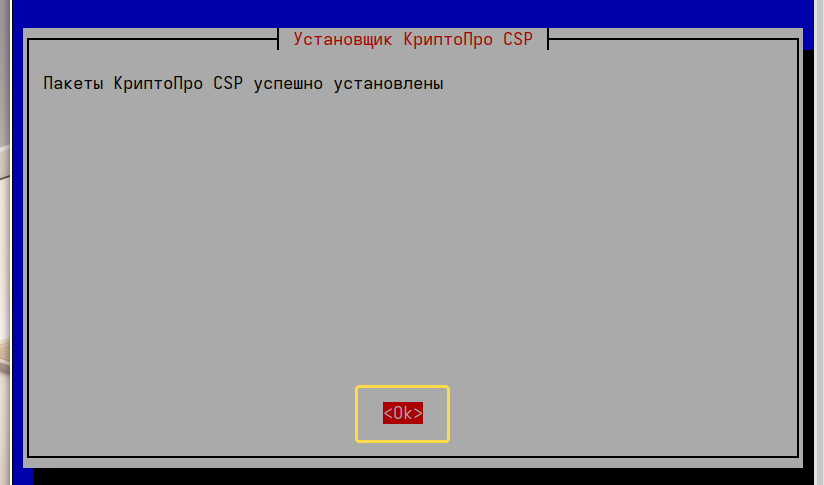
Используем пробную версию
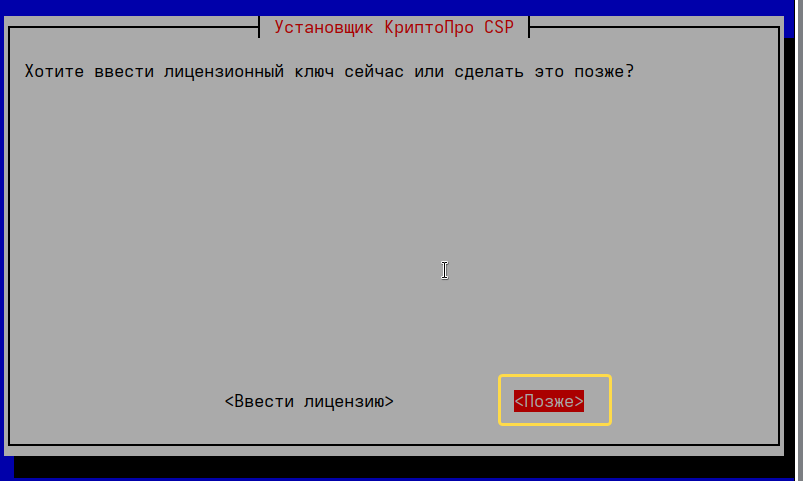
Жмем Выход
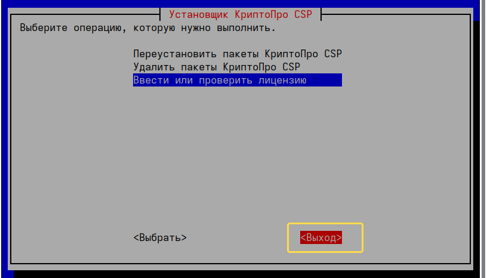
Проверяем доступность
web.au-team.irpoиdocker.au-team.irpoпоhttps
Если браузеры были запущены во время установки
Коревого сертификатаиКриптоПро CSPперезапускаем браузер.
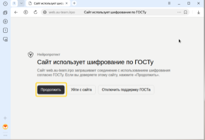
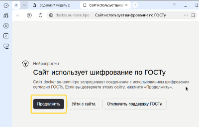
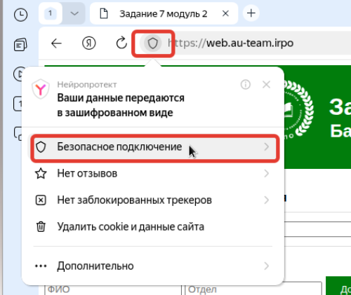
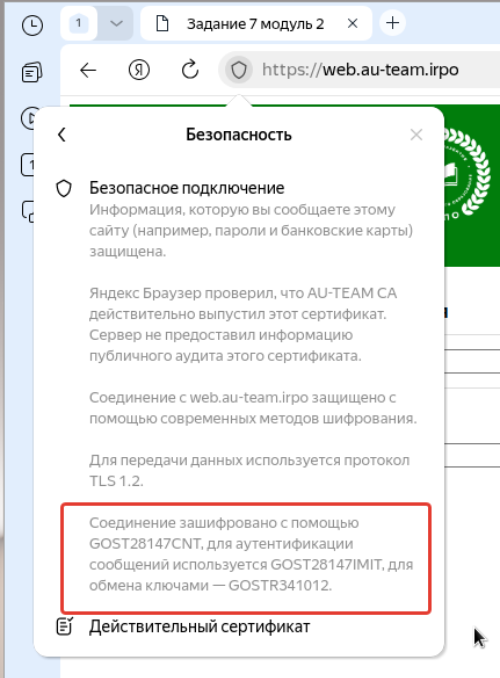
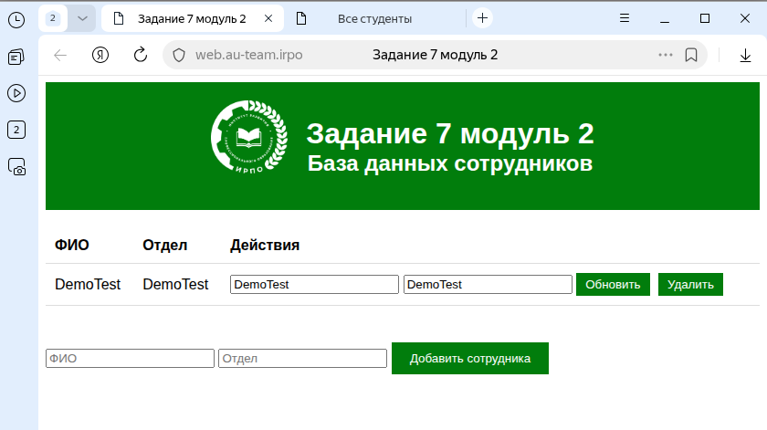